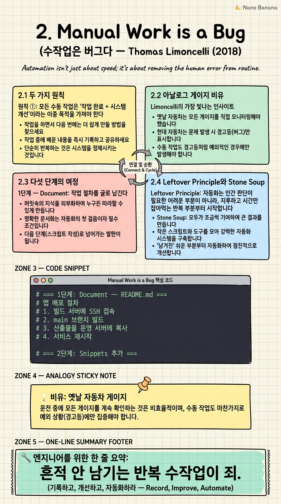

Manual Work is a Bug

🎯 학습 목표
- 수작업이 왜 '버그'로 취급돼야 하는지 이해한다
- 자동화를 0/1이 아닌 게이지로 보는 시각을 익힌다
- 단계별 자동화 전략을 자기 업무에 적용할 수 있다
- Stone Soup 협업으로 팀 자산을 만드는 법을 안다
- AI 에이전트 시대에 이 글이 왜 더 중요해지는지 설명할 수 있다
Stack Overflow의 시스템 관리자 Thomas Limoncelli가 ACM Queue에 쓴 짧은 칼럼. 한 줄 요약은 도발적이다 — '모든 수작업은 버그다.' 진짜 뜻은 수작업 자체가 잘못이 아니라 '흔적을 남기지 않는 반복 수작업'이 버그라는 것이다.
이 글은 SRE/DevOps 매니페스토로 자주 인용된다. AI 에이전트 시대엔 더더욱 중요해졌다. 왜냐하면 LLM은 '문서화되고 snippet화된' 절차를 가장 잘 수행하고, '머릿속에만 있는 절차'는 전혀 수행하지 못하기 때문이다. 자동화를 위한 자동화가 AI 에이전트의 발판이 된다.
핵심 내용
2.1 두 가지 원칙
원칙 ①: 모든 수동 작업은 '작업 완료 + 시스템 개선'이라는 이중 목적을 가져야 한다. 서버 재시작 티켓을 처리했다면 '재시작 완료'만 남으면 안 되고, 다음번에 더 쉬워질 무언가 — 문서 한 줄, snippet 하나, 스크립트 한 함수 — 가 같이 남아야 한다.
원칙 ②: 산출물(artifact)을 만들거나 기존 산출물을 개선하지 않는 수동 작업은 '허용되어선 안 된다'. Limoncelli는 이 표현을 강하게 쓴다. 작업을 끝낼 때 시스템에 무언가가 '쌓이지' 않으면 그 작업은 다음에도 똑같은 비용으로 반복된다.
이 두 원칙은 단순해 보이지만 실천하기 어렵다. 바쁠 때 '일단 끝내자'의 유혹이 강하기 때문이다. 시니어와 주니어를 가르는 건 이 유혹에 흔들리지 않는 습관이다.
2.2 아날로그 게이지 비유
Limoncelli의 가장 빛나는 인사이트. 자동화를 '됐다/안 됐다'의 이분법이 아니라 옛날 자동차의 아날로그 게이지처럼 연속 스펙트럼으로 보자는 것. 왼쪽 끝은 완전 수동, 오른쪽 끝은 완전 자율.
중요한 건 '바늘이 어디 있느냐'가 아니라 '오른쪽으로 움직이고 있느냐'다. 완벽한 자동화를 목표로 시작하면 너무 거대해서 시도조차 못 한다. 하지만 '이번 작업에서 바늘 한 칸 옮기기'가 목표면 매일 진짜로 굴러간다.
이 시각은 자동화의 가장 큰 적인 완벽주의를 무력화한다. '오늘은 문서 한 줄을 추가했다. 다음번엔 명령어를 박아 넣겠다.' 이게 누적되면 결국 자율 시스템이 된다.
2.3 다섯 단계의 여정
1단계 — Document: 작업 절차를 글로 남긴다. 머릿속이 외부 산출물로.
2단계 — Add Snippets: 문서에 실제 명령어를 박아 넣는다. '복붙'만 하면 되도록.
3단계 — Script: snippet들을 묶어 스크립트로. 한 번에 다 자동화하지 않는다. 가장 지루한 부분부터.
4단계 — Self-Service: 다른 팀원이 호출할 수 있게 만든다. Slack 봇, 웹 UI, CLI 한 줄. 운영팀 인터럽트가 급감한다.
5단계 — Autonomous: 이벤트·스케줄·임계치에 따라 알아서 실행된다. 사람은 결과 모니터링만.
단계 간 점프는 어렵다. 한 단계씩 진행해야 다음 단계의 준비가 자연스럽게 갖춰진다.
2.4 Leftover Principle와 Stone Soup
Leftover Principle: 자동화는 인간 판단이 필요한 어려운 부분이 아니라, 지루하고 시간만 잡아먹는 반복 부분부터 처리하라. 사람의 판단이 필요한 결정은 마지막까지 남겨도 좋다. 80%만 자동화돼도 손익은 압도적이다.
Stone Soup: 서양 동화에서 온 비유. 나그네가 돌멩이 수프를 끓이겠다며 솥에 물을 끓이자 마을 사람들이 호기심에 당근·감자·고기를 보탠다. 결국 다 같이 먹을 진짜 수프가 완성된다. 메시지: 첫 단계 산출물(돌멩이 = 허접한 문서)을 git에 올려두면 동료들이 자발적으로 기여해서 혼자선 절대 만들지 못했을 팀 자산이 된다.
'완벽해지면 공개하겠다'는 영원히 공개 안 한다는 뜻이다. 부끄러운 단계부터 공유하라.
2.5 AI 에이전트 시대에 더 중요해진 이유
Limoncelli는 2018년에 인간 자동화를 얘기했지만, 이 정신은 AI 에이전트 시대에 두 배로 적용된다.
LLM 에이전트(Claude Code, Cursor, Devin 등)는 '문서화되고 절차화된' 시스템에선 강력하지만, '머릿속에만 있는' 시스템에선 무력하다. 팀의 모든 절차가 git에 markdown으로 있고, snippet으로 박혀 있다면 에이전트가 그걸 읽고 실행할 수 있다. 종이로만 굴러가는 절차는 에이전트에게 보이지 않는다.
즉, Limoncelli의 5단계 게이지는 이제 'AI 에이전트가 활동할 수 있는 무대를 마련하는 작업'이기도 하다. 수작업 → 문서화 → 스크립트화 → AI 에이전트 호출 가능. 이게 새로운 자동화의 전체 spectrum이다.
💡 비유로 이해하기
Tesla의 디지털 대시보드 말고, 1970년대 무스탕의 아날로그 RPM 게이지를 떠올려라. 0과 redline 사이를 바늘이 부드럽게 움직인다.
자동화도 마찬가지다. 완전 수동(0)에서 완전 자율(redline) 사이의 어느 지점에서 우리는 살고 있다. 중요한 건 절대 위치가 아니라 방향이다. 이번 달 바늘이 어제보다 0.5 칸 오른쪽이면 그 팀은 건강하다. 6개월간 같은 위치면 toil이 누적되고 있다.
이 게이지를 머릿속에 갖고 있는 엔지니어는 모든 수작업 앞에서 자동으로 묻는다 — '이걸 끝낼 때 바늘을 어디로 한 칸 옮길까?'
💻 코드 예시
배포 절차 하나를 게이지의 다섯 단계로 진화시켜 본다. 같은 작업이 각 단계에서 어떤 산출물을 남기는지 비교하자.
# === 1단계: Document — README.md ===
# # 앱 배포 절차
# 1. 빌드 서버에 SSH 접속
# 2. main 브랜치 빌드
# 3. 산출물을 운영 서버에 복사
# 4. 서비스 재시작
# === 2단계: Snippets 추가 ===
# ssh deploy@build.company.com
# cd /app && git pull && make build
# scp build/app.tar prod@web1:/tmp/
# ssh prod@web1 'systemctl restart app'
# === 3단계: Script (deploy.sh) ===
#!/bin/bash
set -euo pipefail
ssh deploy@build 'cd /app && git pull && make build'
scp deploy@build:/app/build/app.tar prod@web1:/tmp/
ssh prod@web1 'systemctl restart app'
echo "✓ deployed at $(date)"
# === 4단계: Self-Service (Slack 봇) ===
# 사용자가 슬랙에서 "/deploy main to prod" → 봇이 deploy.sh 실행
# === 5단계: Autonomous (GitHub Actions) ===
# main 머지 → CI → staging 자동 배포 → 헬스체크 5분 → prod 자동 승급
# 사람은 알림만 받는다.
1단계에선 절차가 외부 산출물(파일)이 된다. 2단계에선 그 절차가 복붙 가능해진다. 3단계에선 한 명령으로 실행 가능해진다. 4단계에선 다른 사람이 호출 가능해진다. 5단계에선 사람이 호출조차 안 한다. 각 단계는 이전 단계 위에 쌓이고, 이전 단계의 '부산물'이 다음 단계의 출발점이 된다.
🏭 현업에서의 평가
✅ 시니어가 보는 것
- 수작업 직후 어떤 산출물이 남는지 의식하는 습관
- '완벽한 자동화'를 기다리지 않고 '오늘 한 칸 옮기기'를 실행하는 태도
- 절차를 git에 올려 동료가 기여할 수 있게 만드는 협업 감각
- Leftover Principle을 적용해 ROI 높은 부분부터 자동화하는 판단력
⚠️ 레드 플래그
- 같은 작업을 매번 처음부터 다시 하는데 문제의식이 없음
- '내가 하는 게 더 빠르니까'라며 자동화를 미루는 패턴
- 절차서를 노트북·개인 메모장에 보관하는 행태
- '완벽하지 않으면 공유 못 한다'는 완벽주의
🎤 예상 인터뷰 질문
- 최근 3번 반복한 수작업이 있다면 무엇이었고, 그 작업이 남긴 산출물은 무엇입니까?
- 팀에서 가장 자동화가 안 된 영역이 어디라고 보고, 첫 한 칸을 옮긴다면 무엇을 하겠습니까?
- AI 에이전트에게 당신의 운영 절차를 맡기려면 지금 무엇부터 정리해야 합니까?
✨ 핵심 요약
수작업 자체가 죄가 아니다
흔적 안 남기는 반복 수작업이 죄.
이중 목적
작업 완료 + 시스템 개선. 둘 다 못 하면 다시 하라.
게이지의 방향
위치보다 방향. 매번 한 칸씩 오른쪽으로.
Leftover Principle
지루한 반복부터. 판단은 사람에게 남겨도 좋다.
Stone Soup
허접해도 git에 올려라. 동료가 보탠다.
5단계
Document → Snippets → Script → Self-Service → Autonomous.
AI 에이전트의 발판
문서화된 절차만 에이전트가 실행할 수 있다.
마인드셋이 결정적
도구·언어가 아니라 '항상 바늘을 미는' 습관이 갈림길.